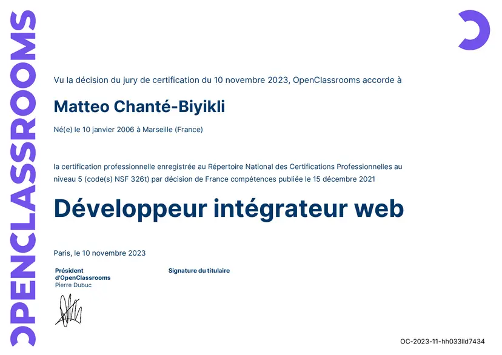
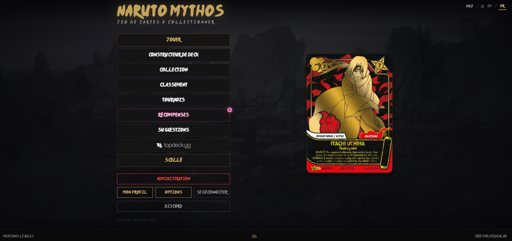
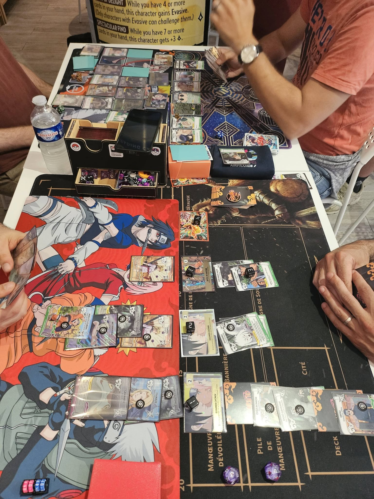
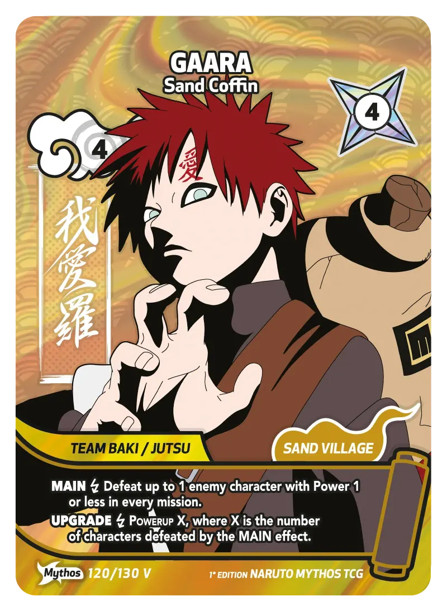

01 Qui je suis

Je m'appelle Matteo, j'ai 20 ans et je vis à Jonquières, dans le Vaucluse. J'ai obtenu en novembre 2023 mon diplôme professionnel de Développeur intégrateur web chez OpenClassrooms, après environ un an de formation. Ce diplôme est enregistré au Répertoire National des Certifications Professionnelles au niveau 5, ce qui correspond à un bac+2.
Depuis, je n'ai pas arrêté de bosser sur des projets perso autour de l'informatique. J'ai aussi décidé de reprendre des études à l'IED Paris 8, en Licence d'Informatique à distance, ce qui me permet de mener de front les cours universitaires et mes projets personnels.
Sur la droite, on voit le diplôme professionnel que j'ai validé fin 2023, niveau 5 RNCP (équivalent bac+2).
02 Le simulateur, mon point de départ
Je suis fan du manga Naruto depuis longtemps. Quand j'ai appris qu'un éditeur italien, Cicaboom, préparait un nouveau jeu de cartes à collectionner officiel intitulé Naruto Mythos TCG, je me suis tout de suite intéressé au projet. Le jeu n'était pas encore sorti, mais avec les premières informations disponibles sur les règles et les visuels des cartes, j'ai décidé de me lancer.
J'ai donc commencé à coder un simulateur en ligne avant la sortie officielle du jeu, pour que les futurs joueurs puissent tester les mécaniques et préparer leurs decks dès les premières annonces. Le site s'appelle tout simplement narutomythosgame.com, accessible gratuitement depuis n'importe quel navigateur.
Aujourd'hui le simulateur est utilisé par plus de 4000 joueurs inscrits et il y a toujours du monde connecté qui joue dessus. Plus intéressant encore, beaucoup de joueurs s'en servent maintenant pour s'entraîner avant les compétitions officielles du jeu en physique, ce qui n'était pas vraiment l'objectif au départ mais que je trouve super gratifiant.
Cicaboom, l'éditeur officiel du jeu, a aussi reconnu le travail fait sur le simulateur et m'a envoyé des produits du jeu en remerciement, ce qui n'était pas du tout attendu et reste une jolie surprise.

03 La sortie du jeu en physique
Quand le jeu est enfin sorti chez Cicaboom, j'ai pu acheter mes premiers boosters et commencer à jouer en personne. Avoir les cartes en main après avoir manipulé leur version numérique pendant des mois, c'était un vrai moment.
Je joue régulièrement dans une boutique à Avignon où plusieurs joueurs se réunissent pour des parties. C'est de là que vient la photo ci-dessous, prise pendant une partie réelle au début 2026.

04 Une carte que j'aime bien
Parmi les nombreuses cartes du set Konoha Shido (premier set du jeu, abrégé KS), il y en a une que je trouve particulièrement réussie visuellement : la carte numéro 120, version Mythos Variant. Il s'agit de Gaara, Sand Coffin, une carte rare avec un fond doré qui rend hyper bien en physique.
Sur la page Cartes (voir le menu), je reproduis l'effet holographique animé directement en CSS pur, suivant le pointeur en 3D.

05 La communauté
Au-delà de la simple partie de cartes, j'ai aussi mis en place toute une infrastructure autour du jeu :
- Un serveur de discussion communautaire où les joueurs se retrouvent pour parler des decks et organiser des matchs.
- Un système de classement ELO intégré au simulateur, avec saisons, leaderboard et historique de matchs.
- Une intégration avec TopDeck.gg qui agrège les résultats des tournois physiques officiels.
- Des tournois en ligne organisés directement sur le simulateur (Swiss, élimination simple).
Le tableau ci-dessous résume rapidement les chiffres du projet :
| Indicateur | Valeur actuelle |
|---|---|
| Joueurs inscrits | Plus de 4 000 |
| Set de cartes disponible | Konoha Shido (KS), 130 cartes |
| Sets à venir | Shinobi Shiren (SS), Akatsuki (AK) |
| Langues supportées | Français et anglais |
| Reconnaissance officielle | Produits envoyés par Cicaboom, éditeur du jeu |
06 Pour aller plus loin
Si vous voulez découvrir le jeu ou simplement curieux, voici quelques liens :
- Mon simulateur en ligne : narutomythosgame.com
- L'éditeur officiel du jeu Naruto Mythos TCG : cicaboom.com
- Le site officiel français du jeu, avec les fiches produits et la liste des revendeurs : narutotcgmythos.com/fr
- L'école où j'ai obtenu mon diplôme de développeur intégrateur web : openclassrooms.com
- L'IED Paris 8, où je suis inscrit en L1 Informatique : iedparis8.net
- La plateforme d'agrégation de tournois TCG que j'utilise pour la page tournois : topdeck.gg